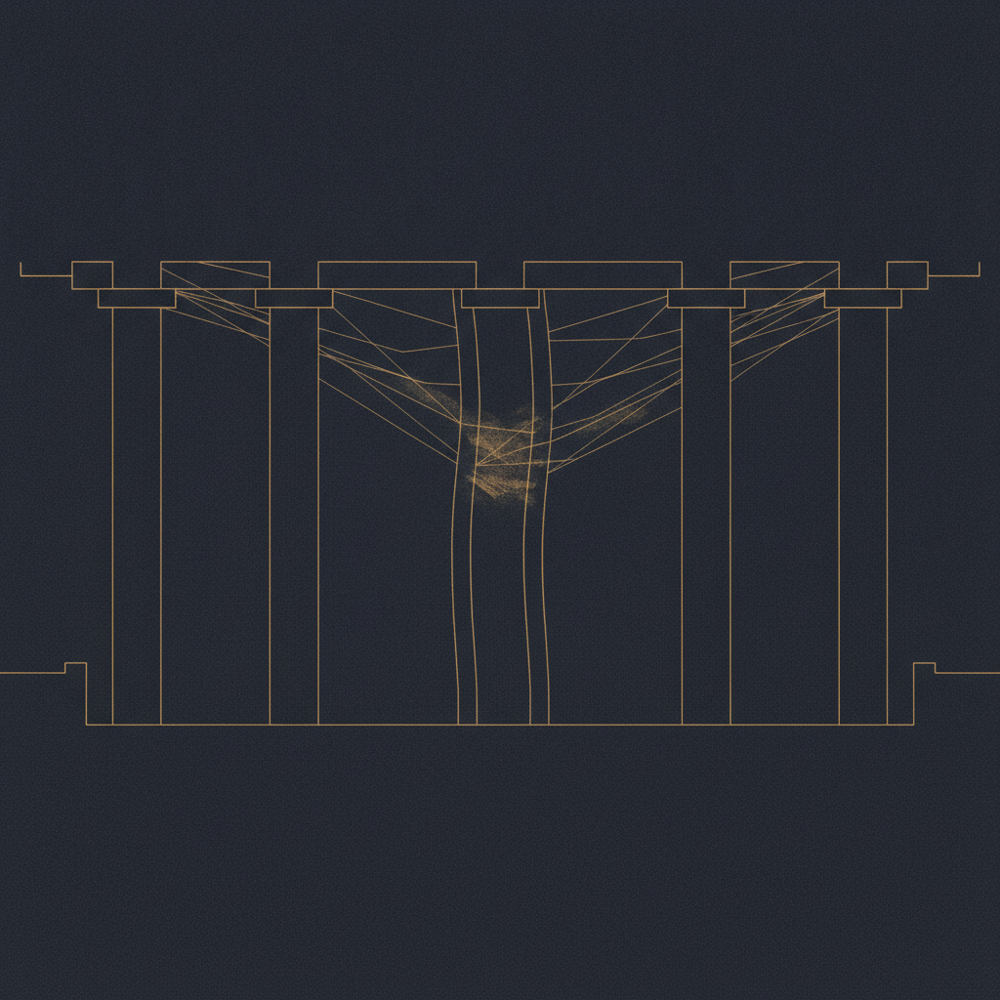

Drafted: 2026-06-17
OS Pillar: Strategy OS
Quarterly Theme: The Machine
Subject: Su consejo dejó de sorprenderlo
Preheader: El contrapeso que construyó se convirtió, sin que lo notara, en el coro que entrenó.
Resumen del Insight: La mayoría de los dueños cree que su consejo existe para validar decisiones. En el momento en que validar es lo único que hace, el consejo deja de ser un órgano de gobierno y se vuelve un cuello de botella disfrazado de supervisión.
Esta semana: cuatro historias sobre lo que cuesta la certeza en la sala del consejo, en la sucesión, en la arquitectura tecnológica y en quien dirige.
Las empresas familiares con más de 100 millones de dólares en ingresos crecerán 22% rumbo a 2030, según una investigación de Deloitte Private citada por Family Business Magazine esta semana. Los ingresos subirán 84% en el mismo periodo. Veintiséis por ciento ya buscan capital externo o private equity. El crecimiento no es la historia. La historia es la gobernanza que no va a sobrevivirlo. Un consejo que funcionaba a la escala del fundador rara vez funciona en la siguiente. La misma sala que ratificaba el instinto a 30 millones de dólares no puede estresar el juicio a 300 millones.
Su consejo dejó de sorprenderlo. Las juntas siguen sucediendo. La agenda sigue circulando. Las minutas siguen archivándose. Pero en algún momento de los últimos dieciocho meses, usted notó algo. Las recomendaciones que entran son las recomendaciones que salen. Un poco pulidas. Nunca revertidas.
La mayoría de los asesores diagnostica esto como un problema de alineación y receta una mejor composición del consejo. No es un problema de alineación. El consejo que usted construyó está haciendo exactamente lo que usted le enseñó a hacer.
Reclutó personas que comparten sus valores. Eso lo hizo bien. Después confundió valores compartidos con juicio compartido. Empezó a llevar al consejo decisiones que ya había tomado, buscando validación disfrazada de deliberación. El consejo aprendió el juego. Se volvió la sala donde usted ensaya, no la sala donde lo confrontan.
Strategy OS trata al consejo como un instrumento específico: un contrapeso a la certeza del fundador. Los valores compartidos son la base. Hacen la sala segura para disentir. No son la conclusión. Son la precondición del desacuerdo genuino.
Un consejo que funciona opera en dos registros. La alineación de valores hace una sola pregunta: ¿coincidimos en para qué existe esta empresa y en quién no queremos convertirnos? La alineación de juicio hace otra distinta. ¿Coincidimos en que esta adquisición es el movimiento correcto? ¿En que esta contratación es la persona indicada? ¿En que este ajuste de precios es el riesgo correcto? El primer registro debe estar compartido. El segundo, disputado.
Cuando los dos registros se colapsan en uno, el fundador interpreta el acuerdo en juicio como prueba de valores. El desacuerdo en juicio se vuelve evidencia de mala alineación. Ahí está la trampa. Es también el momento en que el consejo deja de ser útil.
Lo que esto exige es más difícil que un nuevo reglamento. Exige ceder la seguridad psicológica de tener la razón en todas las salas. El consejo que de verdad necesita es uno que pueda decirle no sin que usted se contraiga. Ese consejo se construye invitando el no, no tolerándolo. La primera vez que la sala le empuje de regreso y usted no se defienda, la sala aprende que tiene permiso de empujar otra vez.
Esta semana, elija una decisión sobre la que esté ochenta por ciento convencido. Llévela a la próxima junta como pregunta, no como recomendación. Presente tres opciones. Diga cuál prefiere y por qué. Después cállese y observe qué pasa.
Si la sala se mueve a ratificar su preferencia, construyó un consejo validador. Si alguien cuestiona el marco mismo —no la opción sino la pregunta—, construyó un consejo contrapeso. La mayoría de los fundadores descubre, en esa sola junta, cuál consejo construyeron de verdad.
Las compras agroalimentarias de Estados Unidos a México cayeron casi 10% en 2025, su primera baja anual en 28 años, y la debilidad continúa en 2026 con un retroceso de 6% entre enero y abril, según datos del USDA reportados por Expansión México. El campo mexicano construyó una operación de 48,629 millones de dólares en exportaciones concentrada en un solo cliente.
Funcionó durante casi tres décadas. Hasta que el regreso de Trump a la Casa Blanca, la sequía interna y la revisión del T-MEC alteraron el clima político de forma simultánea. La caída no se originó en una cláusula contractual. Se originó en una conversación en Washington.
Para el dueño de una mediana empresa del corredor T-MEC con facturación entre 5 y 100 millones de dólares, la lectura es directa. Si la continuidad de su empresa depende de la voluntad de una administración hacia un tratado, ese cliente no es un sistema. Es una posición. Trátelo así en su plan de continuidad.
The Two-Register Board Audit - una revisión de una página que se corre antes de cada junta del consejo. La primera columna identifica la pregunta de valores sobre la mesa y si la sala está alineada. La segunda columna señala la pregunta de juicio sobre la mesa y dónde usted genuinamente disiente. Si la segunda columna queda vacía en tres juntas consecutivas, el consejo dejó de ser contrapeso para convertirse en coro. Constrúyalo en Google Docs y compártalo con el presidente del consejo antes de que circule la agenda.
La señal a seguir esta semana: cuántas decisiones llega a la junta del consejo cargando una sola opción recomendada en lugar de tres. Cuente las juntas, no las decisiones. Si se descubre presentando una única ruta preferida más de una vez, está usando al consejo como ratificador. El número es un diagnóstico sobre usted, no sobre ellos. El contrapeso que necesita empieza con la pregunta que lleva.
Si algo de este número resonó contigo, respóndeme - leo cada mensaje.
Si le es útil a alguien en tu red, reenvíalo - es el mayor cumplido.
Cuando estés listo para trabajar juntos directamente, así es como empezamos: [link]
Draft generated by the pipeline. Review and edit before sending.